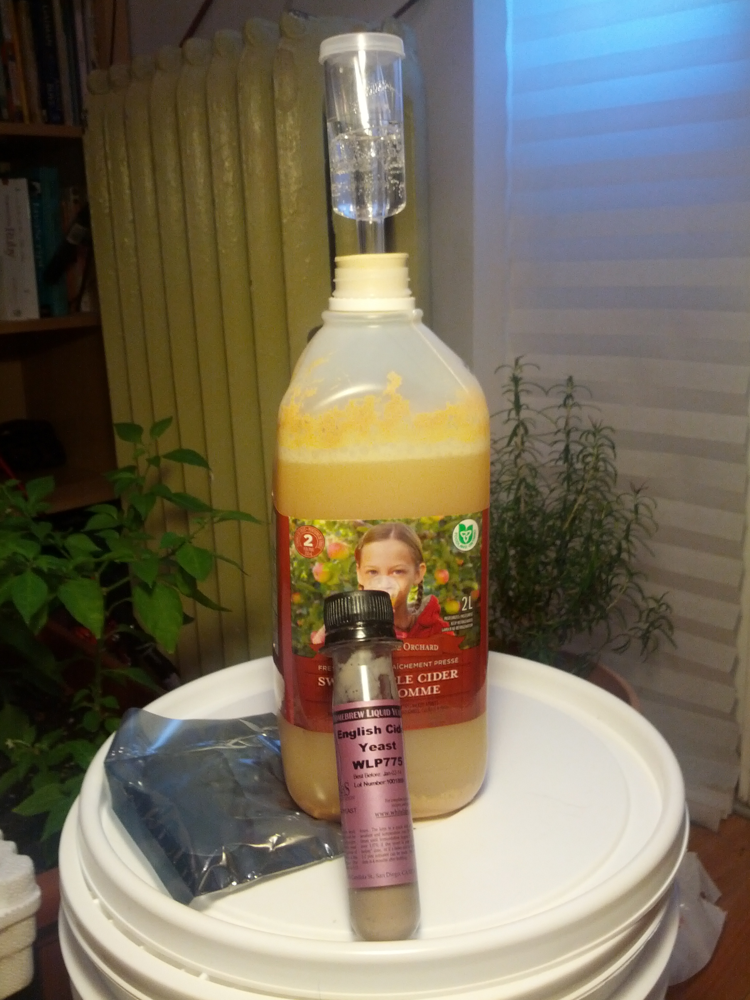
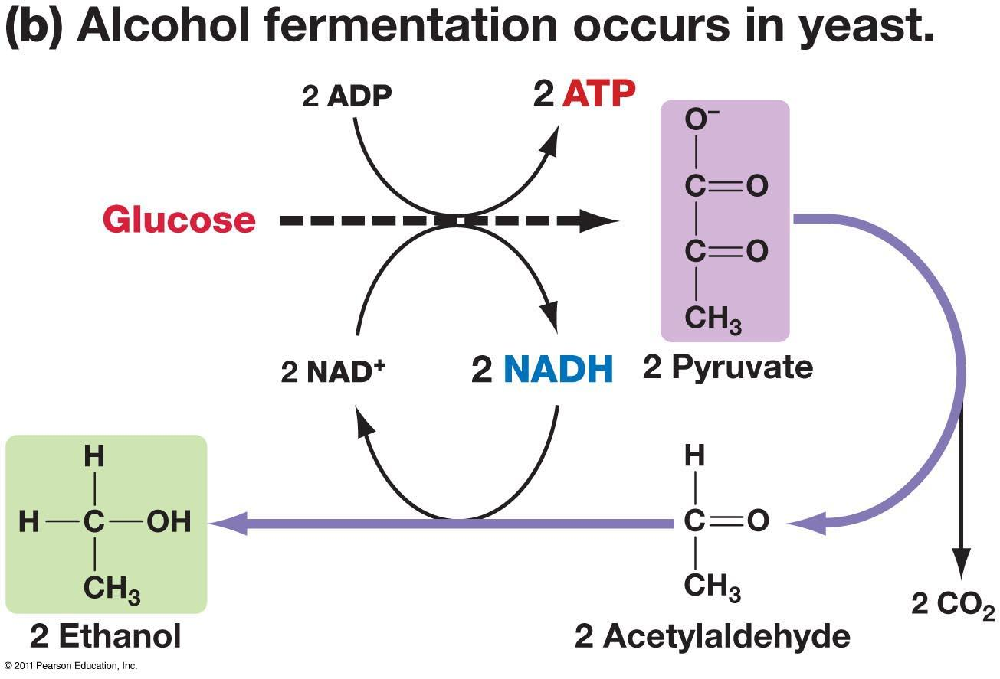

--- layout: default ---
<div>
    
<h1>DIY Hard Cider</h1>

    
    
<h2 style="background: #CCCCCC; padding: 10px;">Overview</h2>

    
<h3>Procedure</h3>

    <ol>
        <li>Open jug.</li>
        <li>Drink some cider, so there's about 10cm of room at the top of the jug.</li>
        <li>Add some dollops of yeast.</li>
        <li>Attach an airlock to the jug opening with a bung, saving the cap for later.</li>
        <li>Store the jug in a room temperature location in the dark.</li>
        <li>Wait three days to a week, until the cider stops bubbling.</li>
        <li>Sugar is now alcohol!</li>
        <li>Move the jug to the fridge. The yeasts will go into a stationary phase and settle at the bottom of the jug.</li>
        </li>Pour off top of the cider into a second jug, add a little bit of sugar, and seal for carbonation. Enjoy!
        <li>Left over yeast can be used again (and again and again). If cold stored they can live for up to 6 months.</li>
        <li>Disinfect your bung and airlock after each use by soaking them in a 1:10 bleach:water mixture for 20 minutes.</li>
        </li>
    </ol>
	
<h2 style="background: #CCCCCC; padding: 10px;">Supplies!</h2>

<ul>
<li><a href="Yeast">http://www.northernbrewer.com/documentation/cider.pdf</a></li>
<li><a href="Bung and Air Lock">http://www.northernbrewer.com/documentation/cider.pdf</a></li>
<li>Apple Cider, without Preservatives (Citric acid is OK)</li>

</ul>
    
<h2 style="background: #CCCCCC; padding: 10px;">Resources</h2>

    
<h3>Cider:</h3>

    <p><a href="http://www.northernbrewer.com/documentation/cider.pdf">Northern Brewer:Cider Quick Guide</a>
    </p>
    <p><a href="http://arstechnica.com/gadgets/2013/10/store-bought-is-not-enough-my-first-hard-cider-homebrew/">Ars Technica: Making your own Hard Cider</a>
    </p>
    <p><a href="http://www.instructables.com/id/Simple-Hard-Cider/?ALLSTEPS">Instructables: Simple Hard Cider</a>
    </p>
    <p><a href="http://www.youtube.com/watch?v=4tDP1ubIci8">Brew TV</a>
    </p>
    
<h3>Yeast:</h3>
    <p><a href="http://www.instructables.com/id/How-to-cultivate-natural-cider-yeast/?ALLSTEPS">How to Cultivate Natural Yeast</a>
    </p>
    <p><a href="http://www.maltosefalcons.com/tech/yeast-propagation-and-maintenance-principles-and-practices">Yeast Propagation and Maintenance</a>
    </p>
    <p><a href="http://www.whitelabs.com/yeast/wlp775-english-cider-yeast">White Labs Yeast: English Cider Yeast</a>
    </p>
    
<h3>Fermentation:</h3>

    
    <p><a href="http://www.youtube.com/watch?v=cDC29iBxb3w">Anaerobic Respiration</a>
    </p>
    <p><a href="http://www.wildfermentation.com/">Wild Fermentation</a>
    </p>
</div>